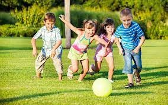

DESENVOLVIMENTO MOTOR INFANTIL
CONHEÇA AS FASES E COMO ESTIMULAR

Desenvolvimento motor
Processo sequencial, contínuo e relacionado a idade cronológica. A criança quando nasce ela realiza movimento reflexos simples e grosseiros e conforme vai ocorrendo o desenvolvimento esse movimento vai ficando organizado e complexo
Bebê em diferentes posições
Recém-Nascido
Deitado de costas:
- Braços e pernas flexionados;
- Quadris geralmente ligeiramente levantados;
- Ombros para a frente, mãos fechadas, pés virados para cima e para fora;
- Geralmente deitado de lado.
Deitado de barriga para baixo:
- Capaz de virar a cabeça para os lados para respirar melhor;
- Pode levantar um pouco a cabeça;
- Membros superiores e inferiores dobrados perto do corpo.
Sentado:
- Com apoio;
- Endireita a cabeça, mas não consegue mantê-la ereta por muito tempo;
- Tronco arredondado.
1º Mês

Deitado de costas:
- Postura assimétrica;
- Membros mais estendidos, mas quadris ainda um pouco flexionados;
- Vira a cabeça para os lados;
- Membros dobrados.
Deitado de barriga para baixo
- Flexão dos quadris um pouco menor;
- Pode levantar um pouco a cabeça, mas não por muito tempo.
Sentado:
Puxado para sentar
- Cabeça ainda cai para trás, incapaz de acompanhar o tronco completamente;
- Tenta segurar a cabeça com as mãos.
Em pé
- Com apoio nas axilas;
- Suporta o peso e dá passos reflexivos.
2º Mês

Deitado de costas:
- Movimentos dos braços e pernas como chutes;
- Quadris podem não estar totalmente apoiados no chão durante os chutes;
- Mais movimentos espontâneos dos membros;
- Sorri e faz sons simples responsivamente.
Deitado de barriga para baixo
- Às vezes, o queixo fica um pouco fora do apoio;
- Ainda pode manter padrão de movimentos mais em flexão, mas os quadris estão mais próximos do chão.
Em pé
- Falta de estabilidade ao ficar em pé
3º Mês
Deitado de costas:
- Postura mais simétrica, com a cabeça no centro por mais tempo;
- Mãos mais freqüentemente abertas, tenta alcançar objetos;
- Mais extensão nos braços e pernas;
- Sorri e faz sons ao interagir com outras pessoas;
- Presta atenção nas faces das outras pessoas.
Deitado de barriga para baixo
- Postura mais estendida, com quadris apoiados no chão;
- Pode apoiar-se nos antebraços;
- Levanta a cabeça entre 45° e 90° do chão e mantém a posição para observar o ambiente.
Sentado:
Puxado para sentar
- Atraso leve na elevação da cabeça, mas faz um esforço para acompanhar o tronco.
4º Mês
Deitado de costas:
- Pode manter as mãos fechadas, mas consegue abri-las para agarrar objetos e levá-los à boca;
- As pernas estão esticadas ou flexionadas e afastadas quando em repouso;
- Vira a cabeça na direção de sons rapidamente.
Deitado de barriga para baixo
- Cabeça e peito estão fora do apoio, com o rosto voltado para cima;
- Quadris esticados e pélvis apoiada no chão;
- Estende completamente os braços e pernas, como se estivesse nadando;
- Algumas crianças podem rolar para a posição deitada de costas.
Em pé
- Com apoio, estica repetidamente as pernas e os dedos dos pés ficam curvados.
5º Mês
Deitado de costas:
- Leva objetos à boca usando as mãos juntas;
- Segura objetos voluntariamente e pode transferi-los de uma mão para outra;
- Toca nos pés com as mãos e pode brincar nessa posição por um longo tempo, às vezes rola para o lado;
- Consegue levantar os quadris do chão com os pés apoiados;
- Postura em "rã".
Deitado de barriga para baixo
- Pode apoiar-se nos antebraços ou nas mãos;
- Transfere o peso de um braço para o outro para alcançar objetos à frente;
- Alguns bebês se movem como uma "rã" nessa posição;
- Rola da posição de barriga para cima para a de barriga para baixo.
Sentado:
- A cabeça acompanha o movimento do tronco.
Em pé
- Suporta quase todo o peso.
6º Mês
Deitado de costas:
- Rola da posição deitada de costas para a de barriga para baixo;
- Consegue levar os pés à boca;
- Apoia-se com toda a mão e a base do polegar quando em posição deitada de costas;
- Começa a fazer sons de balbucio;
- Vira a cabeça na direção de sons.
Deitado de barriga para baixo
- Apoia-se com uma das mãos.
Sentado:
Puxado para sentar
- Precisa de ajuda com a cabeça e os membros superiores para sentar.
Em pé
- Pula com vigor quando segurado em pé.
8º Mês
Deitado de costas:
- Os movimentos de "chute" desaparecem;
- As pernas estão esticadas, mais juntas e ligeiramente viradas para fora;
- Geralmente não gostam de ficar deitados de costas, preferem rolar ou sentar;
- Começa a pegar objetos fora de alcance;
- Por volta dos 9 meses, pode usar o polegar e os dedos para pegar objetos e apontar com o indicador;
- Começa a soltar objetos.
Deitado de barriga para baixo
- Passa para a posição sentada;
- Rasteja para trás sobre o abdômen;
- Por volta dos 9 meses, passa da posição sentada para a de barriga para baixo e rasteja para frente.
Sentado:
Puxado para sentar
- Consegue puxar-se sozinho com a ajuda do cuidador.
Em pé
- Consegue sustentar-se nos membros inferiores e segurar-se nos móveis; puxa-se para ficar de pé e toda a sola do pé toca o chão.
10º Mês
Deitado de costas:
- Brinca jogando e pegando objetos;
- Acena com a mão;
- Usa a pinça para pegar objetos, mas às vezes abre demais a mão;
- A partir dos 12 meses, aprende a pegar objetos com mais precisão.
Deitado de barriga para baixo
- Engatinha de forma cruzada, apoiando-se nas mãos e nos joelhos;
- Faz movimentos de balanço para frente e para trás nessa posição;
- Alguns bebês podem engatinhar de forma parecida com a de um urso.
Sentado:
Em pé
- Consegue ficar de pé apoiando-se nos móveis; levanta um pé e pode subir no sofá ou na cama;
- Volta a sentar-se geralmente usando as pernas dobradas.
Esses são os principais marcos motores e posições que os bebês podem apresentar em seus primeiros meses de vida. É importante observar o desenvolvimento do bebê e fornecer apoio adequado em cada etapa para promover um desenvolvimento saudável.
15º Mês
- Caminha sozinho, mas costuma cair com freqüência;
- Fala várias palavras usando expressões comuns;
- Aponta para as coisas que quer.
18º Mês
- Joga a bola;
- Senta sozinho em uma cadeira pequena e consegue subir em uma cadeira de adulto;
- Anda, às vezes cai, anda rápido, mas tropeça;
- Corre com passos curtos;
- Tira as próprias roupas;
- Fala muitas palavras compreensíveis.
21º Mês
- Anda e brinca agachado;
- Desce escadas com o apoio de uma mão, colocando ambos os pés no mesmo degrau;
- Chuta uma bola;
- Segura bem o copo, derrama quando está cheio e joga fora quando acaba.
24º Mês
- Corre sem cair muito;
- Pés e pernas mais flexíveis;
- Sobe e desce escadas sozinho;
- Se agacha freqüentemente para brincar sozinho;
- Começa a girar a mão quando leva a colher à boca;
- Joga a bola para baixo;
- Veste-se e escova os dentes com ajuda;
- Lava e seca as mãos, embora não tão corretamente;
- Forma sentenças combinando palavras;
- Usa pronomes como eu, meu e você.
Ambiente
- Espaço físico: Ambientes amplos e seguros permitem que a criança pratique habilidades motoras como correr, pular e subir.
- Disponibilidade de materiais: Brinquedos e equipamentos adequados incentivam o desenvolvimento motor através de atividades como manipulação, empilhamento e encaixe.
- Estímulos sensoriais: Ambientes com texturas, cores e sons variados estimulam a exploração e o desenvolvimento das habilidades motoras da criança.
- Interação social: Brincadeiras com outras crianças e adultos promovem atividades em grupo que contribuem para o desenvolvimento motor e social.
- Supervisão e encorajamento: A supervisão atenta e encorajadora dos adultos permite que a criança se sinta segura para experimentar novos movimentos, desenvolvendo confiança e autoestima.
- Modelagem de comportamento: Exemplos positivos de adultos ativos podem influenciar a criança a imitar esses comportamentos, desenvolvendo suas próprias habilidades motoras.